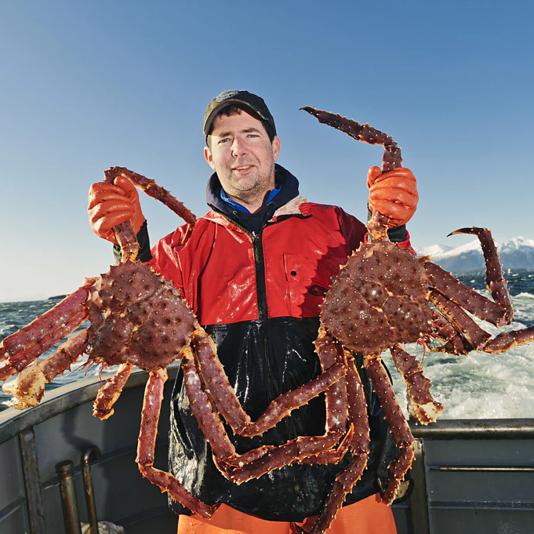

Generix is a company founded by

Jacob Matthew Mills is an Orange County–based percussionist and educator with over a decade of performance experience and a strong background in music education.
He has performed with independent percussion ensembles such as Impulse Drum & Bugle Corps and Instinct Percussion. He has also contributed to collegiate and community ensembles including the Golden West College Concert Band, Huntington Beach Community Band, and Long Beach Community Band.
Jacob holds a Bachelor of Arts in Liberal Studies from Arizona State University, with concentrations in Child Development, Education Studies, and Organizational Leadership. He is currently an active educator, serving as Percussion Director at Redondo Union High School, Front Ensemble Instructor at Marina High School, and Percussion Instructor at Narbonne High School, where he is dedicated to developing students both musically and personally.

